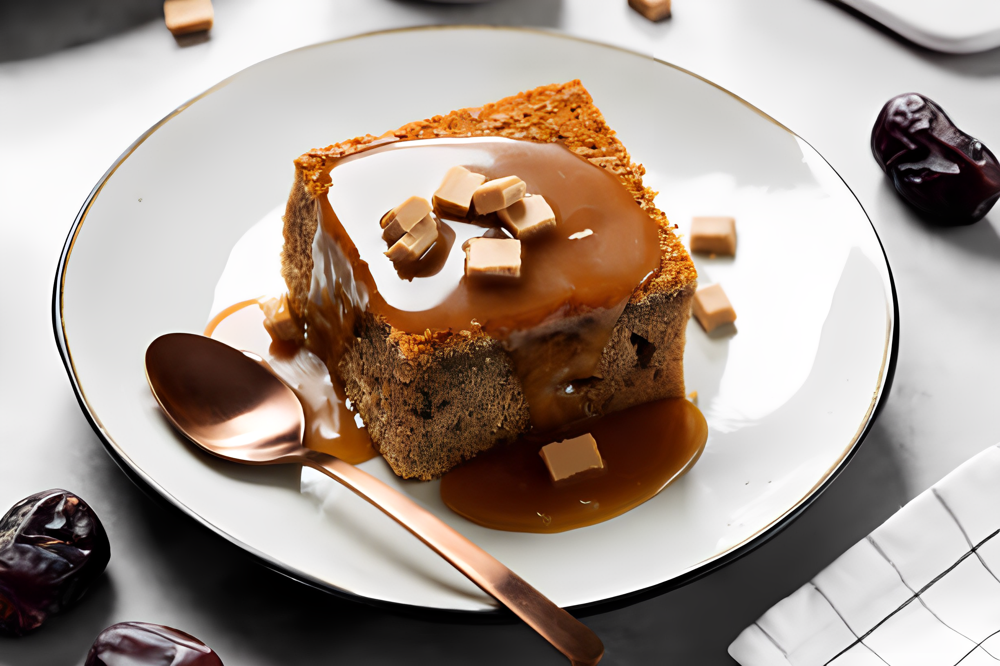

Certainly! Sticky toffee pudding is a delicious British dessert known for its rich, moist texture and
sweet toffee sauce.
Ingredients
For the Pudding
1 cup chopped dates
1 teaspoon baking soda
1 1/4 cups boiling water
1/2 cup unsalted butter, softened
1 cup granulated sugar
2 large eggs
1 3/4 cups all-purpose flour
1 teaspoon baking powder
1/2 teaspoon salt
For the Toffee Sauce
1 cup packed brown sugar
1/2 cup unsalted butter
1 cup heavy cream
1 teaspoon vanilla extract

Instructions
1. Preheat Oven
Preheat your oven to 350°F (175°C). Grease a baking dish or individual pudding molds.
2.Prepare the Dates
In a bowl, combine the chopped dates and baking soda. Pour the boiling water over the dates and let them
sit for about 10-15 minutes until softened. Afterward, mash the dates with a fork or blend them into a
smooth paste.
3.Make the Pudding Batter
n a separate large mixing bowl, cream together the softened butter and granulated sugar until light and
fluffy. Add the eggs one at a time, beating well after each addition. Then, gradually fold in the flour,
baking powder, and salt. Finally, fold in the mashed date mixture until well combined.
4.Bake the Pudding
Pour the batter into the prepared baking dish or molds. Bake in the preheated oven for about 25-30
minutes for individual puddings or 40-45 minutes for a larger dish, or until a toothpick inserted into
the center comes out clean.
5.Make the Toffee Sauce
While the pudding is baking, prepare the toffee sauce. In a saucepan over medium heat, combine the brown
sugar, butter, and heavy cream. Stir constantly until the sugar has dissolved and the mixture is smooth.
Bring it to a gentle boil, then reduce the heat and simmer for 5 minutes, stirring occasionally. Remove
from heat and stir in the vanilla extract.
6. Serve
Once the pudding is done baking, remove it from the oven and let it cool for a few minutes. Cut the
pudding into squares or portions and pour the warm toffee sauce over the top.
7.Enjoy
Serve the sticky toffee pudding warm, and enjoy the indulgent sweetness of this classic dessert!
Feel Good to adjust the serving size and ingredients based on your preferences.😋 Enjoy your sticky
toffee pudding!